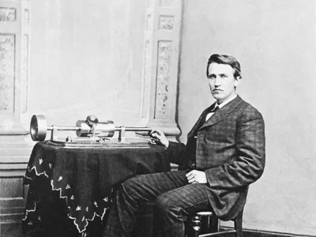

En 1854, Samuel Edison fue nombrado farero y carpintero en el puesto militar de Fort Gratiot, cerca de Port Huron (Michigan), donde la familia vivía en una casa considerable. Alva, como se conocía al inventor hasta su segundo matrimonio, ingresó allí en la escuela, a la que asistió esporádicamente durante cinco años. Era imaginativo e inquisitivo, pero como la mayor parte de la enseñanza era memorística y tenía dificultades auditivas, se aburría y le tachaban de inadaptado. Para compensarlo, se convirtió en un lector ávido y omnívoro. La falta de educación formal de Edison no era inusual. En la época de la Guerra Civil, el estadounidense medio había asistido a la escuela un total de 434 días, poco más de dos años de escolarización según los estándares actuales.
Grabado antiguo de 1878 de la sala de hilatura de Shadwell Rope Works. Vista de la fábrica. En 1859 Edison dejó la escuela y empezó a trabajar como maquinista en el ferrocarril entre Detroit y Port Huron. Cuatro años antes, la Michigan Central había iniciado la aplicación comercial del telégrafo al utilizarlo para controlar el movimiento de sus trenes, y la Guerra Civil trajo consigo una gran expansión del transporte y las comunicaciones. Edison aprovechó la oportunidad para aprender telegrafía y en 1863 se convirtió en aprendiz de telegrafista.
Los mensajes recibidos en el telégrafo Morse inicial se inscribían como una serie de puntos y rayas en una tira de papel que se descodificaba y leía, por lo que la sordera parcial de Edison no era un impedimento. Sin embargo, los receptores estaban cada vez más equipados con una tecla sonora, lo que permitía a los telegrafistas "leer" los mensajes mediante los clics. La transformación de la telegrafía en un arte auditivo dejó a Edison cada vez más en desventaja durante su carrera de seis años como telegrafista itinerante por el Medio Oeste, el Sur, Canadá y Nueva Inglaterra. Dotado de gran ingenio y perspicacia, dedicó gran parte de su energía a mejorar el incipiente equipo y a inventar dispositivos para facilitar algunas de las tareas que sus limitaciones físicas dificultaban. En enero de 1869 ya había hecho suficientes progresos con un telégrafo dúplex (un dispositivo capaz de transmitir dos mensajes simultáneamente por un solo cable) y una impresora, que convertía las señales eléctricas en letras, que abandonó la telegrafía por la invención y el espíritu empresarial a tiempo completo.
Edison se trasladó a Nueva York, donde se asoció inicialmente con Frank L. Pope, un destacado experto en electricidad, para fabricar la Impresora Universal de Stock Edison y otros telégrafos de impresión. Entre 1870 y 1875 trabajó desde Newark, Nueva Jersey, y participó en diversas asociaciones y complejas transacciones en la ferozmente competitiva y enrevesada industria telegráfica, dominada por la Western Union Telegraph Company. Como empresario independiente estaba a disposición del mejor postor y jugaba a dos bandas contra el medio. Durante este periodo trabajó en la mejora de un sistema de telégrafo automático para los rivales de Western Union. El telégrafo automático, que grababa los mensajes mediante una reacción química engendrada por las transmisiones eléctricas, tuvo un éxito comercial limitado, pero el trabajo hizo avanzar los conocimientos de Edison en química y sentó las bases para su desarrollo del bolígrafo eléctrico y el mimeógrafo, ambos dispositivos importantes en la primitiva industria de las máquinas de oficina, y condujo indirectamente al descubrimiento del fonógrafo. Bajo los auspicios de Western Union ideó el cuádruplex, capaz de transmitir cuatro mensajes simultáneamente por un solo cable, pero el barón del ferrocarril y financiero de Wall Street Jay Gould, acérrimo rival de Western Union, arrebató el cuádruplex de las manos de la compañía telegráfica en diciembre de 1874 pagando a Edison más de 100.000 dólares en efectivo, bonos y acciones, uno de los mayores pagos por cualquier invento hasta ese momento. Siguieron años de litigios.
© Uso Académico
Maracaibo - Estado Zulia
Venezuela